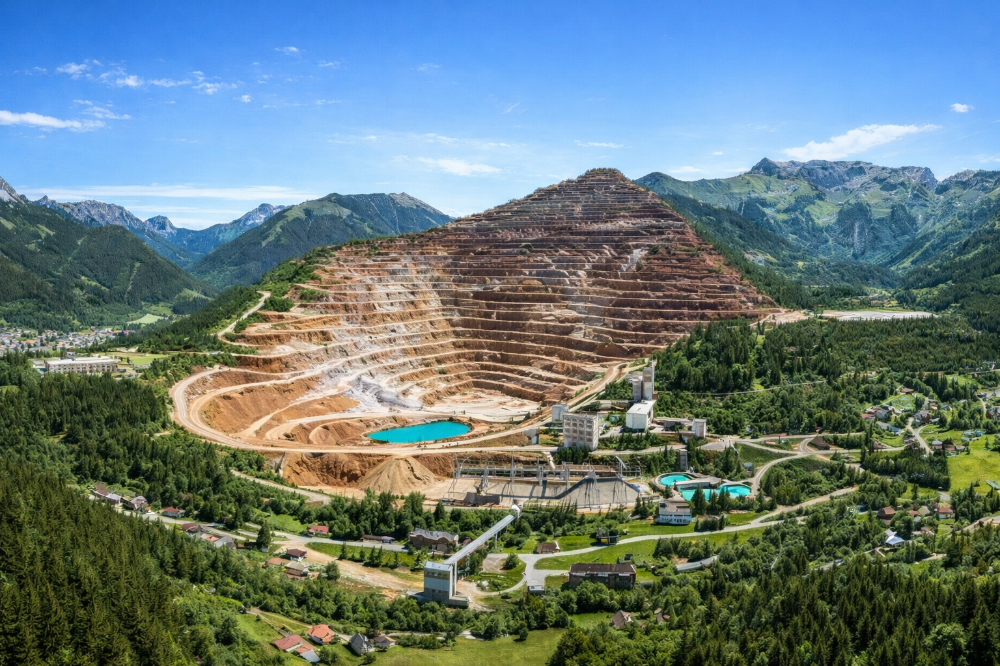
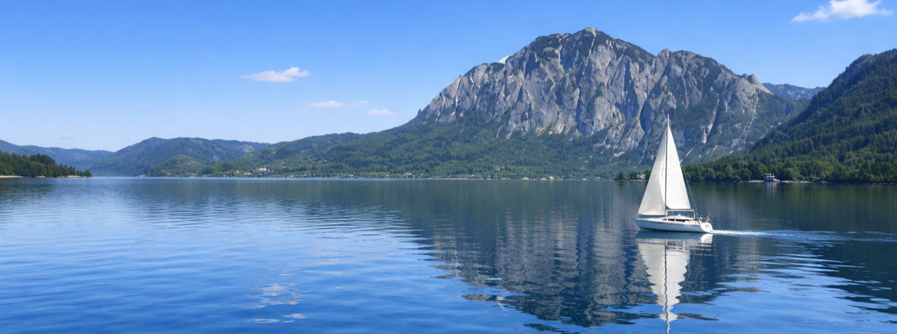
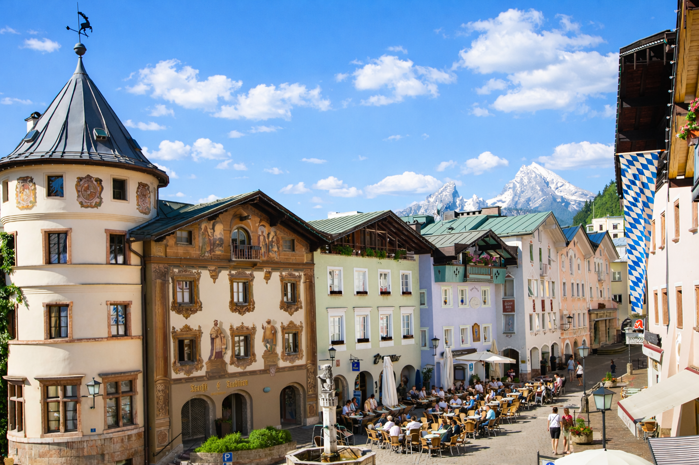

DAY02 – Bruck an der Mur → Königssee
A mérés automatikusan indul oldalnyitáskor, majd 5 mp múlva frissít.
A távolságok minden célpontnál frissülnek, és az oldal a legvalószínűbb következő pontra ugrik.
1. Präbichl-hágó
47.521045, 14.954738
mérés:
várakozás
távolság: —
1226 méter magas hágó a Hochschwab és az Eisenerzi-Alpok között. Az útvonal (B115) technikás szerpentinekkel kapaszkodik fel a hágóra.

2. Erzberg (A Vas-hegy)
47.538139559771366, 14.926539360931969
mérés:
várakozás
távolság: —
Közép-Európa legnagyobb külszíni vasércbányája, a lépcsőzetes teraszok a B115-ös út mellől is láthatók.

3. Hengst-hágó (Hengstpaß)
47.70183938964735, 14.460694831334223
mérés:
várakozás
távolság: —
985 méter magas, csendes, erdős hágóút (L550) a Kalkalpen Nemzeti Park térségében, kanyargós aszfaltcsíkkal.

4. Traunsee és Seeschloss Ort (Gmunden)
47.91678324968555, 13.796486031357546
mérés:
várakozás
távolság: —
Ausztria legmélyebb tava (191 m), amelynek északi partját érinti az útvonal. Gmunden jelképe a hídon megközelíthető Ort kastély.

5. Großalmstraße
47.84872929950052, 13.659273879779022
mérés:
várakozás
távolság: —
Ritkán lakott hegyi szerpentin (L544), amely a Traunsee-t köti össze az Attersee-vel, erdőkben és hegyi íveken vezet.

6. Attersee
47.82099905016881, 13.547481990326986
mérés:
várakozás
távolság: —
A Salzkammergut legnagyobb felületű tava, amelynek partján a motorozható út hosszú szakaszon közvetlenül a víz mellett fut.

7. Mondsee
47.806036, 13.439962
mérés:
várakozás
távolság: —
Tó és település a Salzkammergut peremén, Salzburg térsége felé.

8. Rossfeld Panorama Straße
47.628433, 13.09446
mérés:
várakozás
távolság: —
Panorámaút Berchtesgaden térségében, magashegyi kilátásokkal.

8a. Hitler eredeti bunkere
47.633827, 13.042848
mérés:
várakozás
távolság: —
Obersalzberg környéki történelmi helyszín, a náci vezetés hegyi központjához kapcsolódó objektum.
9. Berchtesgaden és a Watzmann
47.63035719082362, 13.005815521006923
mérés:
várakozás
távolság: —
A Bajor-Alpok szíve, Németország egyik legimpozánsabb hegyi katlanja, amelyet a Watzmann 2713 méteres csúcsa ural.

10. Königssee
47.59485, 12.986016
mérés:
várakozás
távolság: —
Smaragdzöld vizű, fjord-szerű alpesi tó meredek sziklafalak között. A napi szakasz végpontja.

11. Camping Grafenlehen (Königssee)
47.59485, 12.986016
mérés:
várakozás
távolság: —
Erdős, folyóparti kemping kb. 5 perc sétára a Königssee-től, Watzmann és Jenner panorámával. 2020-ban felújított vizesblokkok, kisbolt, téli kempingezés és 6 elektromos autó töltő.

Térkép